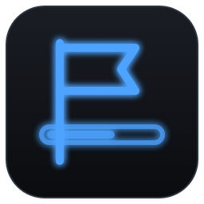
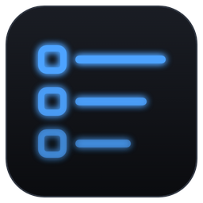
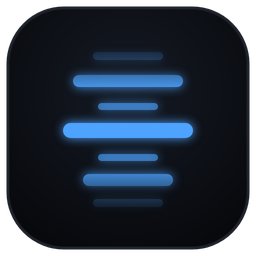
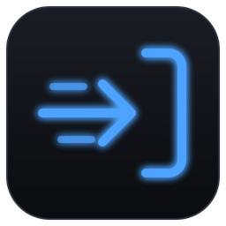

What it is and why you'd want it
Think of it as a remote control for your stream that reacts on its own. Something happens (a follow, a sub, a raid, someone types !discord) and Streamer.bot runs whatever steps you've set: send a chat message, play a sound, show a source in OBS, or pass the news to an overlay.
- It runs on your PC, next to OBS. It only works while it's open, so start it before you go live.
- It talks to Twitch and Kick at the same time, so one action can handle both. Handy if you multistream.
- It's free. There's an optional Patreon, but everything in this guide works without it.
Tools on this site that use it

Goal BarsOverlay · WebSocket only
Activity FeedOverlay · WebSocket only
CreditsOverlay + import
Raid WelcomeImport"WebSocket only" means there's nothing to import: once section 5 is done, the overlay just works.
Download and install
- Download it from the official site onlyGo to streamer.bot/downloads and get the newest stable version. It comes as a zip. Don't download it from anywhere else.
- Unzip it to a normal folderSomething like
C:\Streamer.botor a folder in Documents is fine. Avoid OneDrive, Google Drive and other synced folders: the official docs say they cause problems. - Open Streamer.bot.exeThere's no installer. The folder is the app, and everything you set up is saved inside it. Pin it to your taskbar so it's easy to open before streams.
- Don't run it as administratorThe docs warn this causes trouble later, especially if you run it as admin once and then switch back.
- Let it update itselfIt tells you when a new stable version is out. To check yourself, open the menu at the top left and pick Check for Updates. It backs up your settings before updating.
Connect your platforms
Twitch
- Log in as yourselfOpen Platforms → Twitch → Accounts. Next to Broadcaster Account, press Login and allow everything Twitch asks for. If you untick permissions, some events won't arrive.
- Bot account (optional)If you've made a separate Twitch account for your bot, log it in as the Bot Account. Messages then come from the bot instead of you. Skip this if you don't have one: everything works with just your own account.
Kick
Kick works differently: its events reach Streamer.bot through the Streamer.bot website, so there are two places to connect. Use the same Kick account in both.
- Log in to Streamer.bot itselfPress Login at the bottom left of the app and sign in through your browser.
- Connect Kick in the appOpen Platforms → Kick. Next to Broadcaster Account, press Login and allow every permission.
- Connect Kick on the websiteOn streamer.bot, open Account Settings and, under Connections, press Connect for Kick. It should say Connected as your Kick name.
- Restart Streamer.botClose it and open it again so the connection takes.
Kick events can be a few seconds slower than Twitch. That's normal: it's how Kick sends them. If Kick goes quiet after a while, disconnect and reconnect Kick on the Streamer.bot website.
YouTube and TikTok
- YouTube: Platforms → YouTube → Accounts, press Sign in with Google, allow access and tick Auto Connect. If your channel is a brand account, sign in with the main Google account first and pick the channel on the next screen.
- TikTok: Streamer.bot has no official TikTok connection, because TikTok doesn't offer a public API for it. Some streamers use a separate app called TikFinity alongside it.
Connect OBS
This lets Streamer.bot switch scenes, show and hide sources, and run filters for you. You need OBS 28 or newer, which has the connection built in.
- Turn it on in OBSIn OBS, open Tools → WebSocket Server Settings and tick Enable WebSocket server. Press Show Connect Info and keep that window open: you need the port and password. If the menu item is missing, use Help → Verify Files.
- Add OBS in Streamer.botOpen Stream Apps → OBS, right-click the empty list and pick Add. Give it a name, set the version to
v5.x, host127.0.0.1, and copy in the port and password from OBS. - ConnectPress OK, then right-click the new connection and pick Connect.
OBS on a second PC? Use that PC's local IP address instead of 127.0.0.1.
Turn on the WebSocket server (for overlays)
This is the one most people miss. It's how browser overlays, like the ones on this site, hear from Streamer.bot. It's a different thing from the OBS connection above.
- Open the server settingsIn Streamer.bot, open Servers/Clients → WebSocket Server.
- Tick Auto StartSo it starts every time you open Streamer.bot.
- Press Start ServerLeave the address as
127.0.0.1and the port as8080. Every overlay on this site expects those unless you change them in the overlay's settings.
Using an overlay on another PC? Set the address to 0.0.0.0 so other devices on your network can reach it, and put this PC's IP address in the overlay's connection settings.
The basics in plain English
A list of steps to run. "Thank a new follower" is an action. Find them in the Actions tab.
What starts an action: a Twitch follow, a Kick sub, a command, going live. One action can have several.
The steps inside an action, run top to bottom: send a message, wait two seconds, show an OBS source.
Things chat types, like !lurk. Set them up in the Commands tab, then use one as a trigger.
Importing someone else's action
Many tools (including Sub Goal, Chat Poll, Raid Welcome and Trivia here) give you an import string: a long block of text with the whole action packed inside.
- Press ImportIt's in Streamer.bot's top bar.
- Paste the stringInto the Import String box. You can also drag a
.sbfile onto it. It shows what's inside before anything is added. - Press Import, then switch on the commandsImported commands come in switched off. Open Commands, right-click each one and enable it, and tick Kick as a source if you stream there.
- Test itRight-click a trigger and pick Test Trigger to fire it without waiting for a real event.
Stay safe and keep a backup
- Only import from people you trust. Imports can contain C# code that runs on your PC. Stick to the official docs, well-known creators and tools you can read first.
- Never share your Streamer.bot folder or its
datafolder. Theauth.dbfile inside holds your Twitch, Kick and YouTube logins. If someone asks for "your files" to help, send screenshots or a single export instead. - Backups happen on their own. Every time Streamer.bot opens or updates, it saves a copy of your settings in the
backupsfolder next todata. To find it: menu at the top left → Open Log Folder, then go up one folder. - To restore one: close Streamer.bot, open the backup zip, copy what's inside into the
datafolder (replace the files) and open Streamer.bot again. - Moving PC or reinstalling Windows? Copy the whole Streamer.bot folder across. Keep a copy somewhere safe, just not in a public or shared place.
If something's not right
| What you see | What to do |
|---|---|
| An overlay shows nothing | Check Streamer.bot is open and the WebSocket server is started (section 5). The overlays on this site reconnect on their own once the server is back. Still blank? Double-click the overlay in OBS and press Refresh cache of current page. |
| Nothing happens on Kick | Kick has to be connected in the app and on the Streamer.bot website with the same account, and you need to be logged in to Streamer.bot at the bottom left. Restart Streamer.bot after connecting. |
| A command doesn't reply | Imported commands start switched off: enable it in Commands. For Kick, tick Kick as a source on the command too. |
| OBS won't connect | The version must be v5.x, and the port and password must match OBS's Show Connect Info exactly. Check OBS's WebSocket server is enabled. |
| It says "Complete" but nothing happened | Action History shows "Complete" even when code inside fails. The real error is in the log: menu → Open Log Folder, open today's log and search for the action's name. |
| An import says it's too old | It was made for an older Streamer.bot. Ask the maker for a new one, or check the official FAQ. |
| Still stuck | Ask in the official Streamer.bot Discord (below). Say your Streamer.bot version, what you expected, and what happened, with a screenshot. |
Learn more
Official links
Good videos to start with
Made by other creators, not by me or the Streamer.bot team. Menus may look slightly different in newer versions.
Next on this site: try Combined Chat first. It needs nothing but the WebSocket server, so it's a quick way to check everything's working. Then work through the Start Here path.